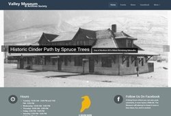
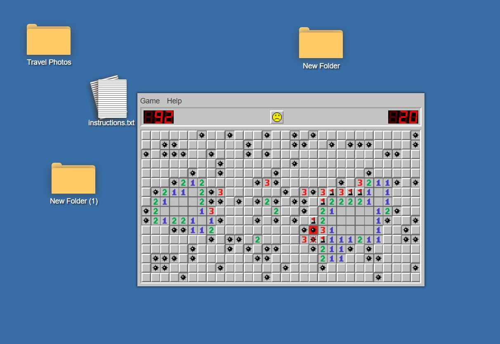

Reed Jones
Student Developer
Learning stuff, solving problems, finding solutions.
I like a good challenge. I built this website with Pug, Sass, and TypeScript, tools I had never used before. I took the opportunity to try something new. I often jump in over my head, but always seem to find my way out. I built myself a cabin, spent six months living in Nicaragua learning how to surf, tree planted for 5 seasons and help build the World Cup Alpine Downhill Ski Race course in Lake Louise, Alberta.
 I am full stack developer with experience in various backend technologies including PHP and Node.JS, various Databases including MYSQL, PostgreSQL, and T-SQL, and frontend technologies such as HTML5 / CSS3 / Javascript / JQuery. I have built the Wordpress and Omeka themes for Valley Museum & Archive Society.
 My latest pet project is Minesweeper.zone where I have implimented a minesweeper clone and am slowly converting it into a virtual desktop.
I am currently finishing my third semester on Computer Engineering Technologies at the Northern Alberta Institute of Technology in Edmonton Alberta, and look forward to graduating December 2017.